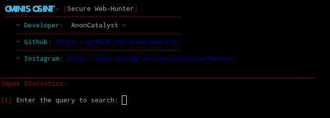
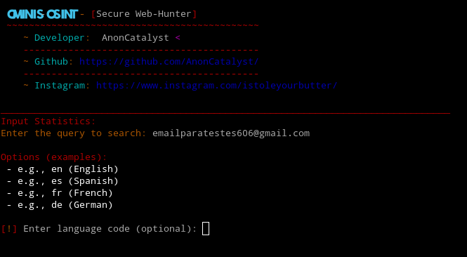
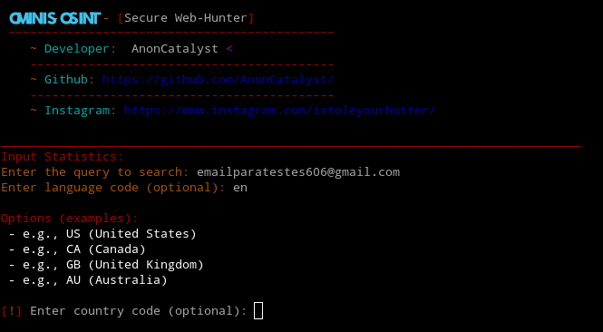
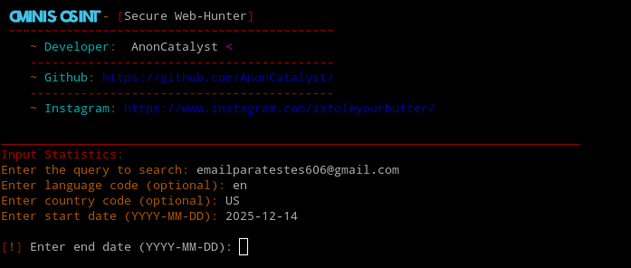
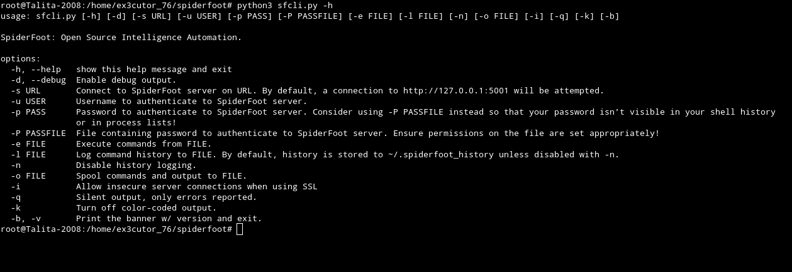
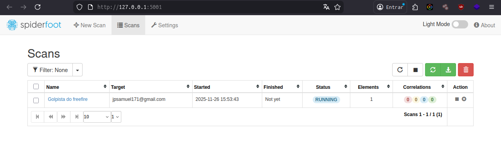

Investigação tanto de pessoas quanto de sites:

o Ominis-osint é uma ferramenta que coleta informações online consultando o google para obter resultados
de pesquisa relacionadas a uma consulta inserida pelo usuário, um exemplo do que ele pode consultar? Ele é capaz de
consultar um email na web publicamente indexada, nome de uma pessoa ou termos em páginas públicas, username em URL's, número de telefone
domínio.
Como instalar o Ominis-Osint:
Clone o repositório no terminal com o comando: git clone https://github.com/AnonCatalyst/Ominis-OSINT
Entre na pasta usando: cd Ominis-OSINT
Depois instale os requisitos com o comando: pip install -r requirements.txt
Mas se caso o seu sistema for chato igual o meu você pode usar: pip install -r requirements.txt
--break-system-packages
Após isso use esse comando para o arquivo install.sh ser considerado executável: chmod +x install.sh
E claro pra executar e ele começar a instalação use: sudo sh install.sh
Agora para usar só usar:
Entre no terminal e use: cd Ominis-OSINT
Mas se caso você estiver no windows basta clicar duas vezes no ominis.exe (E sim tem como usar isso no windows)
Mas se caso você está no Linux assim como eu use: python3 ominis.py
Claro que irá aparecer naquela tela e eu sei que não costumo fazer passo-a-passo de eu usando ferramentas até porque isso
pode resultar em algumas coisas não muito boas, mas por vocês que alguns provavelmente não irá entender a ferramenta irei praticar aqui
com vocês.
Nesta tela de exemplo ele está pedindo um "query" que bem é o que estamos pedindo exatamente e aqui podemos colocar
nome de usuário, email, telefone, domínio e até nome completo.
E no meu caso aqui vou pesquisar um email de teste que eu havia criado bem recente.

Que bem o email que pesquisei vai ser o email para testes mesmo, que inclusive já usei muito ele para testar algumas ferramentas.
E bem como podem ver nessa parte a ferramenta tá pedindo um idioma e sim infelizmente não tem pt br, então vou no inglês mesmo.

Pois é, percebeu que a ferramenta é específica e chata né? Pois é, por aqui tá pedindo o tipo de inglês
sendo eles o inglês estadunidense, canadense, europeu (Reino Unido) ou australiano e bem aqui não vou hesitar e vou apenas escolher o
inglês estadunidense.

Pois é, agora vamos ter que colocar uma data e bem como eu nem sei quando diabos eu criei esse email para testes, vou colocar de pelo menos
3 dias antes do dia de hoje (17/12/2025).

Sim agora precisamos colocar a última data que esse email saiu e bem vou usar a data de hoje e lembrando tudo isso em um modo de calendário que é
usado nos Estados Unidos.

Percebe que ele fez uma busca usando alguns proxies certo? Que inclusive não, nenhum desses proxies é da rede tor e se você quiser que ele use o proxie da
rede tor você precisaria configurar, e mexer no arquivo de uma ferramenta é fácil, mas um erro a ferramenta para de funcionar, então se você quiser alterar
alguma coisa em uma ferramenta, pensa melhor no que você vai fazer, e bem como pode ver na tela também, ele usou outros mecanismos de busca como o bing e duckduckgo
e não eles não encontraram nada sobre esse email pelo fato de ele ser recente e não se usado para nada.
E bem só fiz isso porque essa ferramenta é bem exigente e bem específica e quis mostrar a você caro visitante como ela é utilizada para você não se perder
afinal, meu objetivo com este site é simples: Te ensinar e te explicar sobre a ferramenta e deixar você praticar você mesmo.

O spiderfoot é uma ferramenta que se integra a praticamente todas as fontes de dados disponíveis e utiliza uma variedade
de métodos para análise de dados, tornando esses dados fáceis de navegar.
Como instalar o Spiderfoot:
Abra o terminal e clone o repositório usando o comando: git clone https://github.com/smicallef/spiderfoot.git
Entre no repositório: cd spiderfoot
Após isso baixe os requisitos usando: pip3 install -r requirements.txt --break-system-packages
Crie um servidor para começar as investigações: python3 ./sf.py -l 127.0.0.1:5001
 E por aqui você clica em "New scan"

E agora no "Scan name" é só colocar o nome do scan
para se organizar melhor e no "Scan target" o email, IP, domínio, hostname e etc do alvo.

O theHarvester é uma ferramenta OSINT que você pode buscar informações sobre um domínio como
um email relacionado, host's, IP's e até mesmo algumas pessoas relacionadas, na imagem acima por exemplo
eu utilizei o -h para me mostrar alguns comandos.
Como instalar o theHarvester:
Instale o uv no terminal: curl -LsSf https://astral.sh/uv/install.sh | sh
Clone o repositório: git clone https://github.com/laramies/theHarvester
Entre no repositório: cd theHarvester
instale as dependências: uv sync
Agora para usá-lo e ver alguns comandos: uv run theHarvester -h
Aviso: Sempre que você quiser pegar informações sobre um domínio use o -b all (Com essa opção
o theHarvester vai puxar informações sobre aquele domínio em todos os navegadores e fontes abertas)